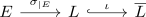
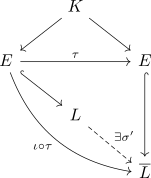
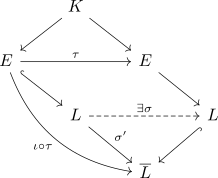

beidseitig galoisscher Zwischenkörper induziert Gruppenepimorphismus der Galoisgruppen
Satz
Seien $L/K$ und $E/K$ Galoiserweiterungen für $K \subseteq E \subseteq L$. Dann ist
Beweis
wohldefinierte abbildung
Sei $\sigma \in \mathrm{Gal}(L/K)$, so ist für einen algebraischen Abschluss

ein K-homomorphismus.
Nach normale Körpererweiterung induziert K-Automorphismus existiert folglich
Damit ist $\pi$ eine wohldefinierte abbildung
gruppenhomomorphismus
folgt als presheaf für den kontravarianten hom-functor, d.h. es gilt
surjektiv
Sei $\tau \in \mathrm{Gal}(E/K) = \mathrm{Aut}_{K}(E)$ Dann existiert für einen algebraischen Abschluss $\overline{L}$ der Morphismus $\iota \circ \tau$
Nach dem Fortsetzungssatz für Körpererweiterungen existiert damit eine Fortsetzung

Nach der Charakterisierung von normalen Körpererweiterungen existiert folglich der K-Automorphismus

Nach Konstruktion kommutiert das diagram, d.h. es gilt auch
und damit
d.h. die Abbildung ist surjektiv